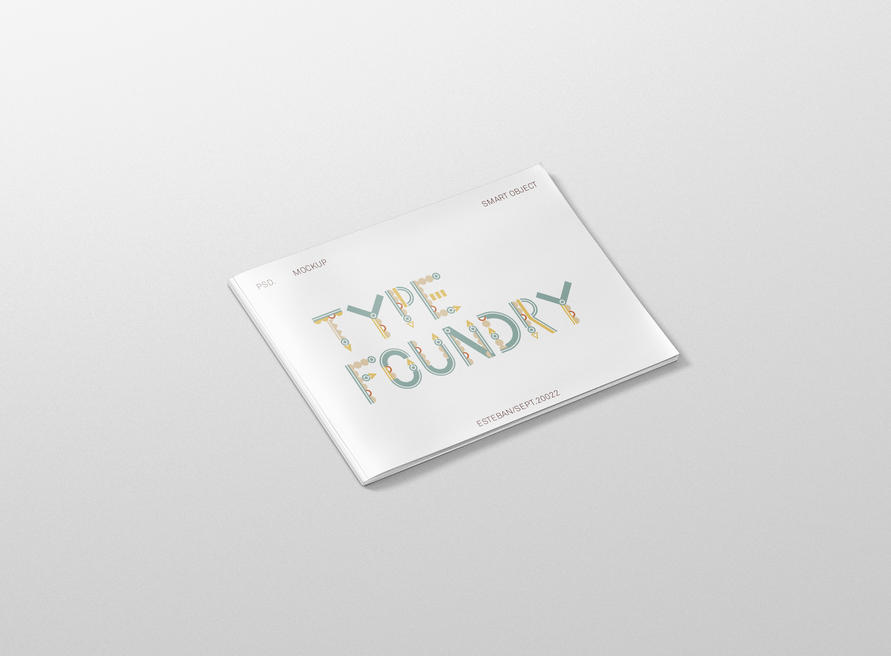
 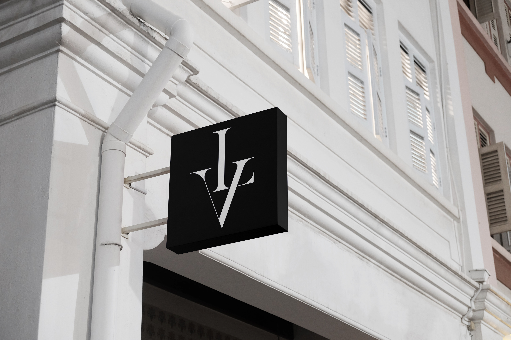
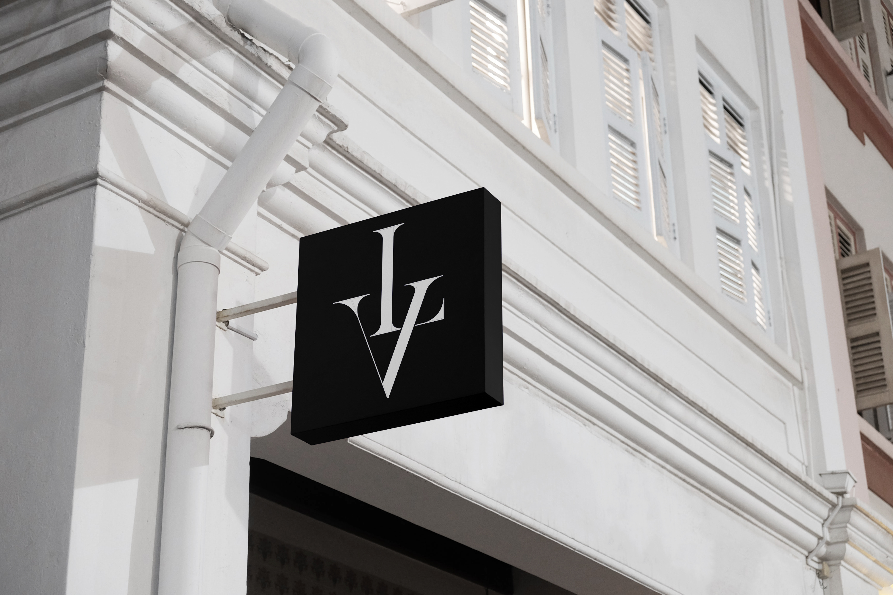

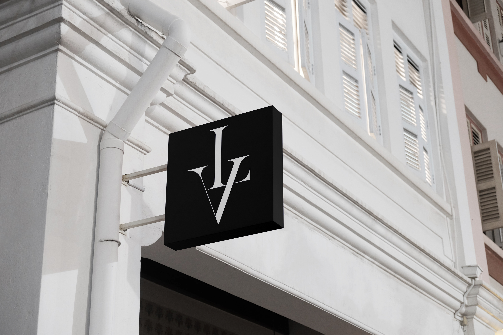
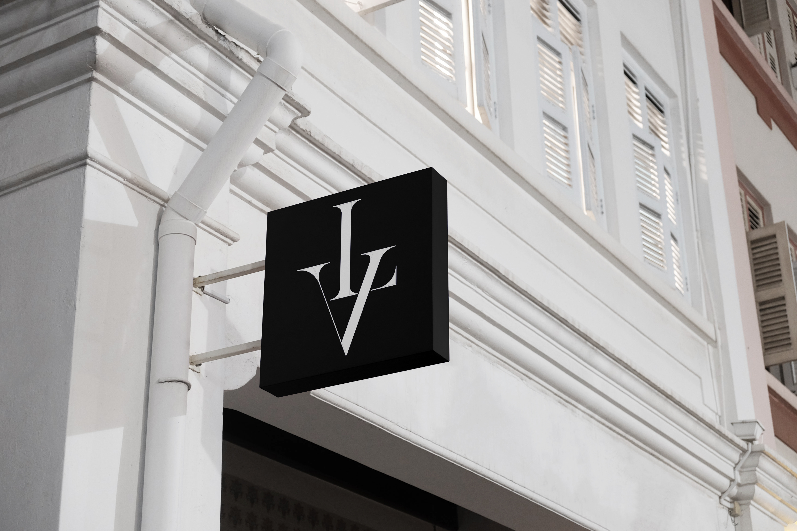
Bonjour et bienvenue dans mon portfolio ! Je m’appelle Esteban Deroussin et je suis né le 26 octobre 2003 à Lyon. J’ai intégré depuis deux ans l’école E.artsup dans la filière direction artistique. Ce site est l’aboutissement de deux ans de travail et de passion. Il vous présente mes meilleurs réalisations dans les différents domaines que j’ai pu expérimenter cette année. J’espère que vous prendrez plaisir à le feuilleter et que cela vous donnera envie d’explorer de nouvelles opportunités créatives avec moi.
Création d’une typographie rétro à partir de plusieurs grilles géométriques sur illustrator. Ce projet est le premier que j’ai réalisé dans le cadre de mes cours de typographie cette année.
Réalisation d’une lettrine illustrée sur le thème de la musique dans le cadre d’un cours de typographie.La lettre a été réalisée sur Illustrator puis ombres et textures ont été ajoutées sur photoshop.
Ce projet réalisé dans le cadre d’un cours de typographie est un monogramme de mon prénom que j’ai créé sur illustrator. J’ai commencé par designer les lettres «E» et «D» dans le cercle puis je me suis ocupé des ornements.

Ce projet a été l'un de mes favoris cette année en illustration. L’objectif était de faire un motif sur le thème de l’automne et de l’intégrer sur différents supports. J’ai pu apprendre une technique permettant de créer un motif répétitif.
 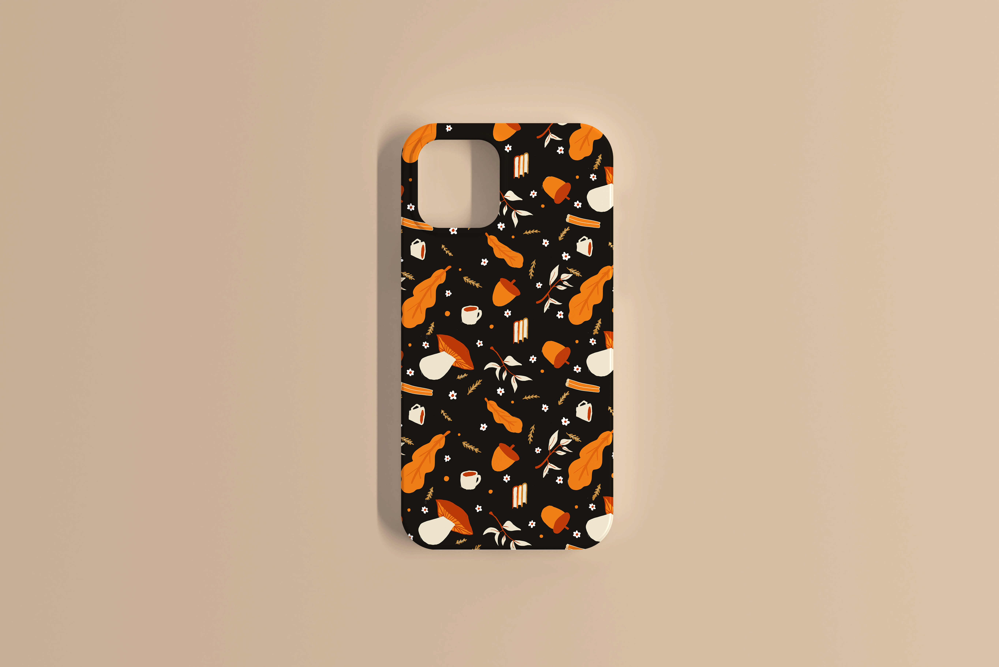
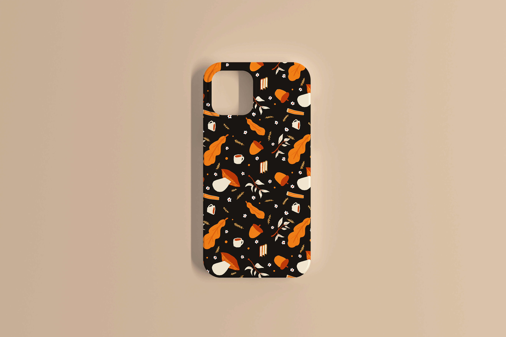
Réalisation d'une illustration de recette de cuisine sur photoshop.
Ce projet avait pour objectif de revisiter le logo de la marque Louis Vuitton. Il a été très intéressant car il a mêlé deux domaines que j'affectionne énormément : la typographie et le branding. Tout d'abord, il a fallu revisiter la typographie de la marque, puis l'intégrer de manière esthétique sur différents supports de vente.

Ce projet à été mon tout premier projet de branding complet. L’idée était de représenter la terre et la ville afin de mettre en avant le lien entre les espaces urbains et la biodiversité des sols.
 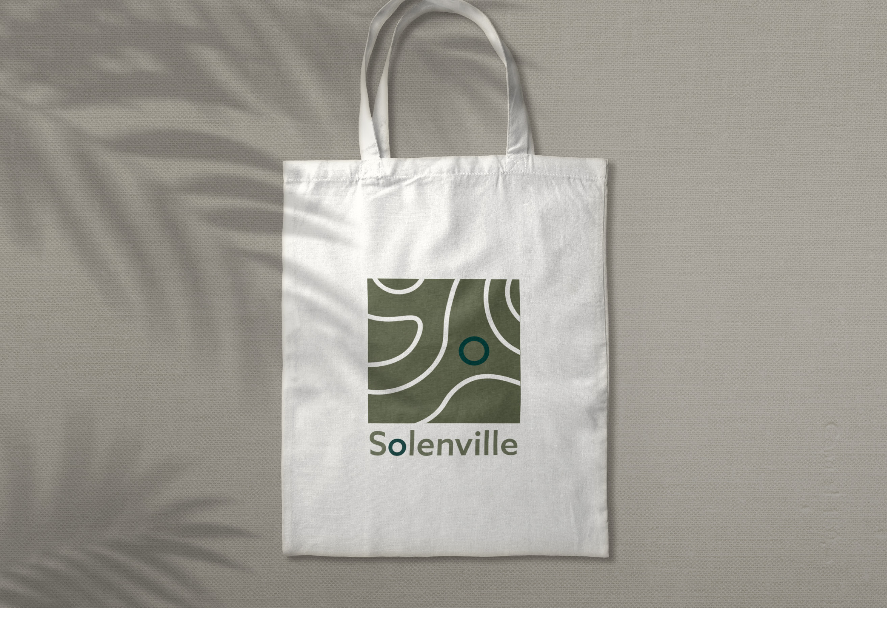
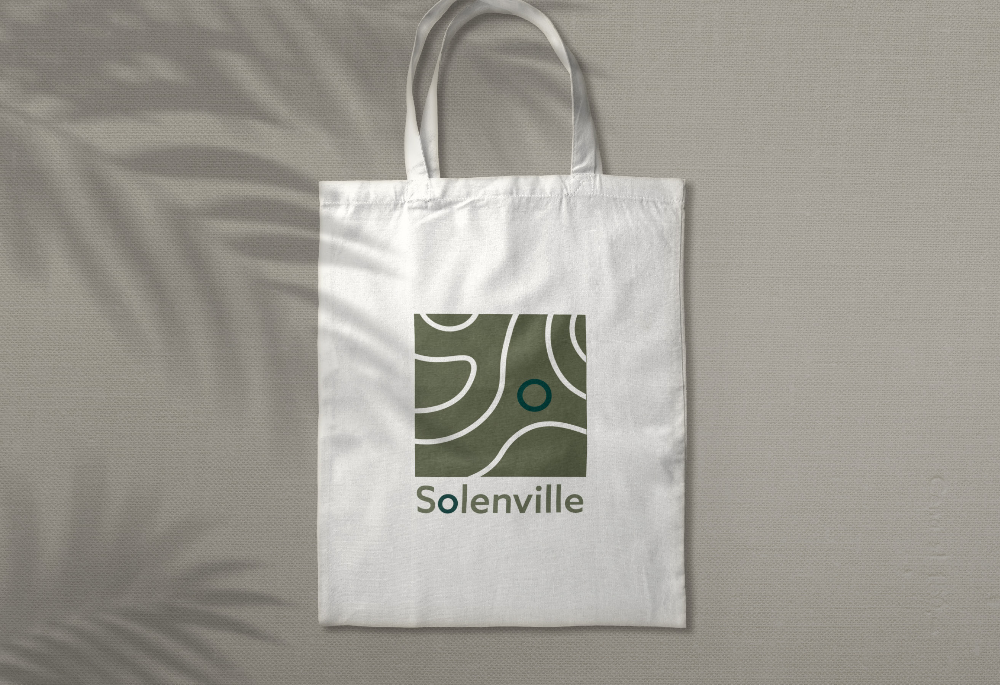
 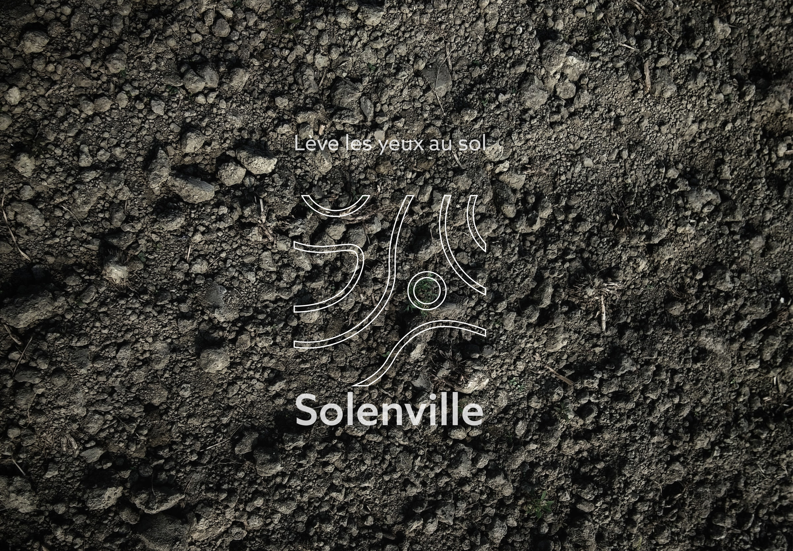
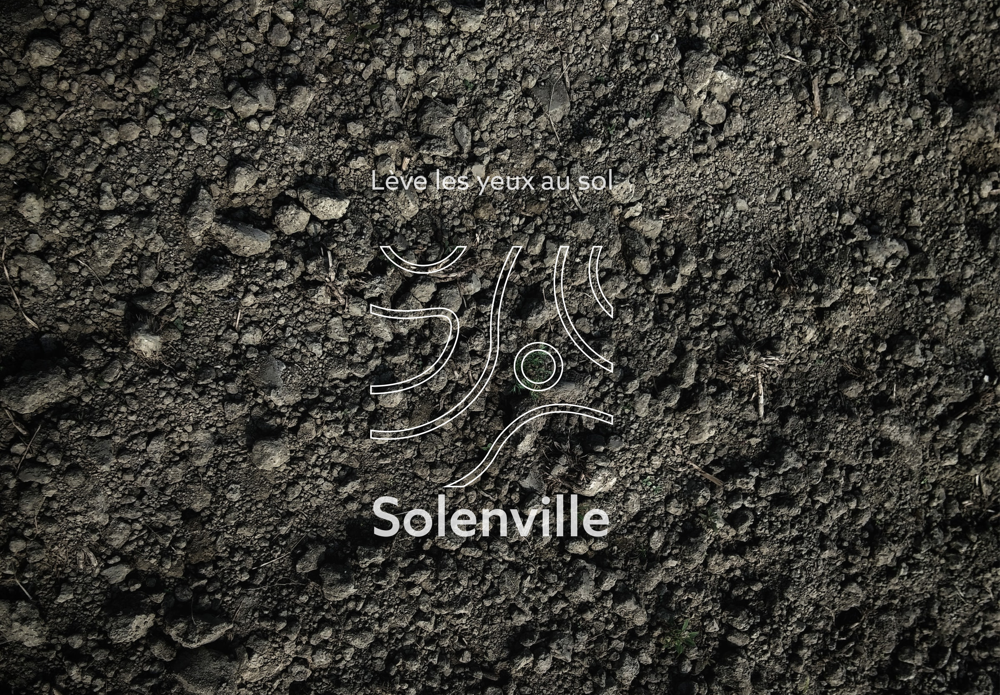
 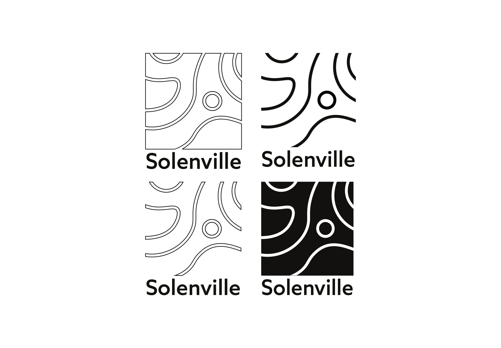
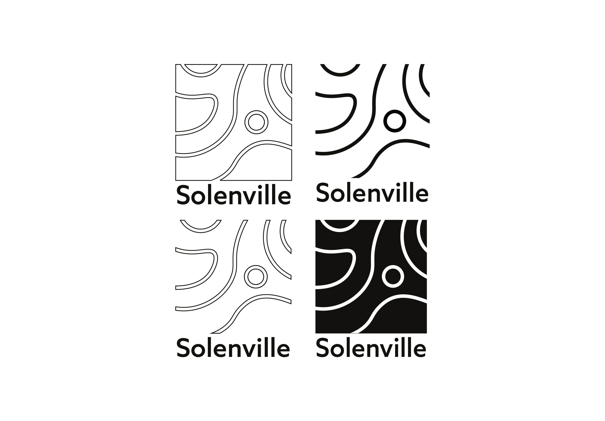
L’objectif dans ce projet était de réaliser le logotype d’un animal en utilisant des formes géométriques.
Dans ce projet réalisé avec deux de mes camarades, l'objectif était de créer une identité visuelle forte pour un festival de musique électronique nomade. Nous devions étudier le public cible et définir une approche réfléchie pour captiver ce dernier. Pour ce projet, nous avons choisi d'explorer le caractère psychédélique du festival.


Dans ce projet, il fallait créer une application immersive en réalité augmentée autour du musée Unterlinden et de ses œuvres. J'ai choisi de m'intéresser aux couleurs et d'imaginer un scanner permettant d'en apprendre davantage sur celles-ci dans les différentes œuvres du musée.


Lors de mon stage chez E.artsup, j'ai eu l'opportunité de créer des affiches mettant en valeur les réalisations des étudiants de chaque filière. L'objectif était de donner du style aux salles de classe. J'ai également réalisé des stickers pour relier les affiches aux cartels.


Dans ce projet réalisé avec deux de mes camarades, l'objectif était de créer une identité visuelle forte pour un festival de musique électronique nomade. Nous devions étudier le public cible et définir une approche réfléchie pour captiver ce dernier. Pour ce projet, nous avons choisi d'explorer le caractère psychédélique du festival.
Dans ce projet, l'objectif était de réaliser une publicité en motion design pour un casque audio. J'ai choisi d'adopter un style épuré et sobre que j'apprécie énormément, en m'inspirant de l'esthétique d'Apple. La musique utilisée est tirée d'une publicité de la marque.